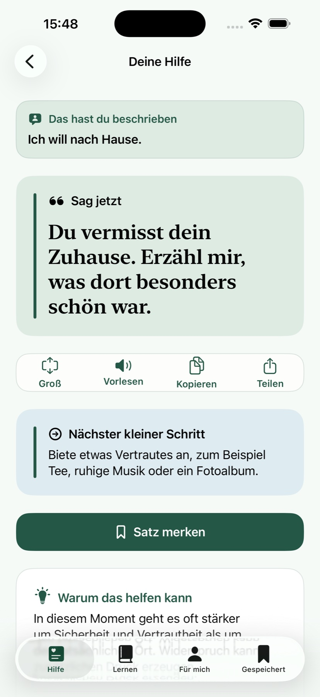
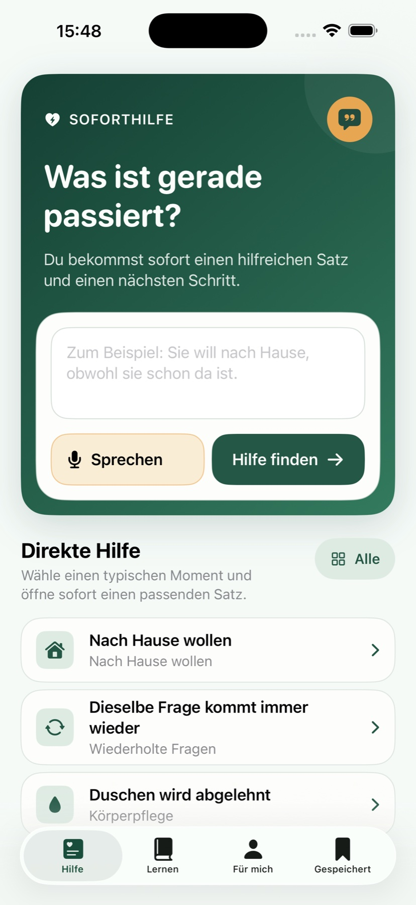
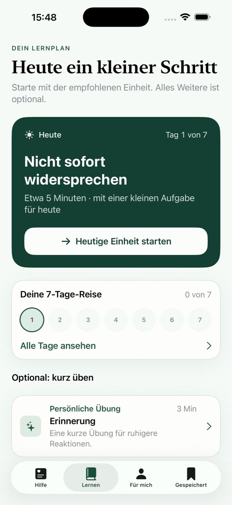
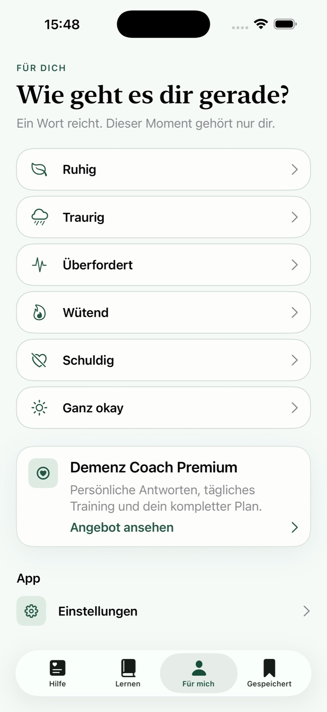

Keine medizinische Leistung
Keine Diagnose, Therapie, Symptomkontrolle, Medikamentenempfehlung, individuelle Pflegeplanung oder sonstige fachliche Einzelfallentscheidung.
Beschreibe eine Alltagssituation und erhalte eine mögliche Formulierung, einen kleinen nächsten Schritt und eine kurze Erklärung.

Kommunikations- und Lernhilfe
KI-Vorschläge immer selbst prüfen
Kein Medizinprodukt oder Notfalldienst
Die folgenden Aufnahmen zeigen den aktuellen App-Build ohne nachgebaute Oberfläche oder Symbolbilder.



Schreibe anonymisiert in ein oder zwei Sätzen, was gerade passiert, oder wähle eine vorgefertigte Situation.
Du erhältst eine mögliche Formulierung. Persönliche Antworten können KI-generiert sein und Fehler enthalten.
Prüfe den Vorschlag anhand der Person, der Situation und vorhandener fachlicher Empfehlungen.
Demenz Coach bündelt kurze Kommunikationsideen, Lerninhalte und lokale Merkhilfen. Die App gibt keine medizinischen oder pflegerischen Einzelfallentscheidungen vor.
Demenz Coach richtet sich an Erwachsene und dient ausschließlich der allgemeinen Kommunikation, Orientierung und Weiterbildung.
Keine Diagnose, Therapie, Symptomkontrolle, Medikamentenempfehlung, individuelle Pflegeplanung oder sonstige fachliche Einzelfallentscheidung.
KI-generierte und redaktionelle Inhalte können unvollständig, unpassend oder veraltet sein. Nutzerinnen und Nutzer müssen sie selbst prüfen.
Bei unmittelbarer Gefahr oder akuten Beschwerden in Deutschland 112 anrufen. Für dringende, nicht lebensbedrohliche medizinische Hilfe gilt 116117.
Vollständige Sicherheits-, Gewährleistungs- und Haftungsregeln lesen
Die wichtigsten Grenzen und Datenschutzentscheidungen auf einen Blick.
Nein. Die App stellt keine Diagnosen, empfiehlt keine Medikamente oder Behandlungen und erstellt keinen individuellen Pflegeplan. Bei fachlichen Fragen wende dich an entsprechend qualifiziertes Personal.
Ja, persönliche Vorschläge können nach ausdrücklicher Einwilligung über OpenAI erzeugt werden. Sie werden als KI-Vorschlag gekennzeichnet, können Fehler enthalten und müssen selbst geprüft werden. Vorgefertigte Situationen funktionieren ohne diese Einwilligung.
Beschreibe Situationen nur anonymisiert. Keine Namen, Adressen, Kontaktdaten, Geburtsdaten, Versicherungsnummern oder detaillierten Patientenunterlagen eingeben.
Nein. Die App überwacht keine Person und alarmiert keine Hilfe. Bei unmittelbarer Gefahr oder einem medizinischen Notfall nutze sofort den örtlichen Notruf.
Für erwachsene Angehörige. Kein Ersatz für professionelle Beratung oder Notfallhilfe.